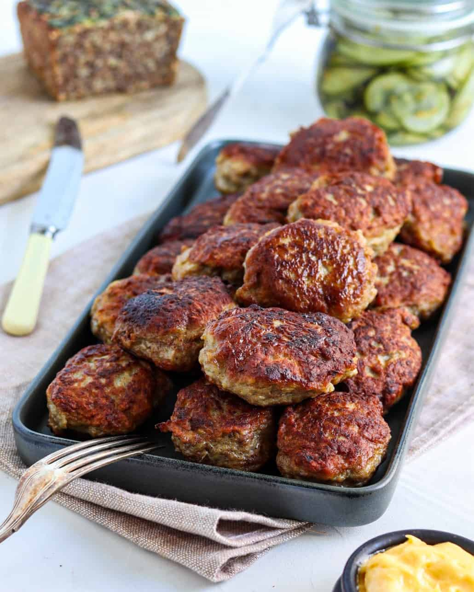

Frikadeller

Description
This is a recipe for the traditional danish dish Frikadeller
You can serve these delicious meatballs with potatoes and gravy, or just with spaghetti
Ingredients
- Ground veal and pork mix
- Eggs
- Flour
- Aromat
- Salt
- pepper
- Butter
Steps
- Mix all the Ingredients excl. butter
- Form the mixture into medium sized meatballs
- Fry for 10 minutes on each side in butter
- Make sure the meatballs are cooked through
- Serve the meatballs
Home